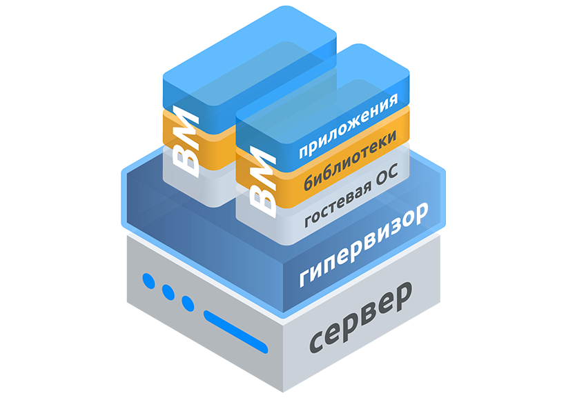
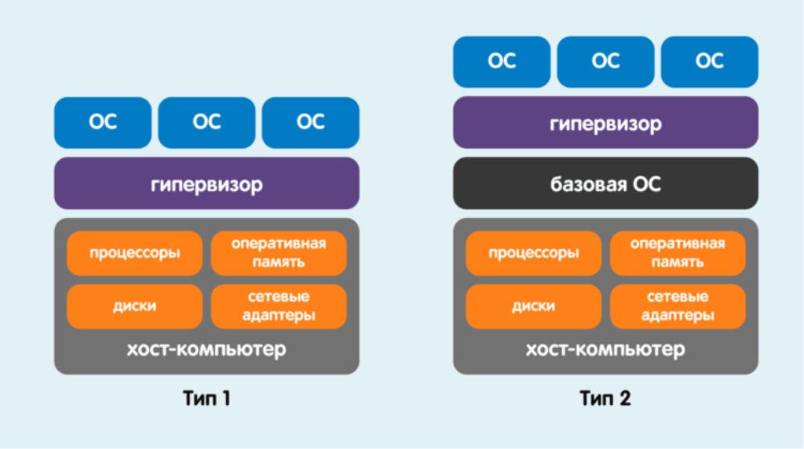

Сурцов Владимир Владимирович
Гипервизор ― это программное обеспечение, позволяющее виртуализировать системные ресурсы. Основная задача гипервизора состоит в предоставлении и координации ресурсов виртуальным машинам таким образом, чтобы они могли функционировать параллельно и независимо (изолированно) друг от друга, сохраняя эффективность и надежность всей системы.

Абстрагирование физических ресурсов: предоставляют виртуальным машинам абстрактные представления реальных аппаратных компонентов (процессор, память, диски, сетевые и видео адаптеры и тд.). Обеспечивают разделение ресурсов среди разных виртуальных машин.
Предоставление аппаратных устройств сервера напрямую виртуальной машине: монопольное использование устройств хоста виртуальными машинами является одним из ключевых аспектов обеспечения высокой производительности и низкой задержки в виртуализированных средах.
Изоляция виртуальных машин: гарантируют независимость работы виртуальных машин, предотвращают влияние сбоев или ошибок одной виртуальной машины на остальные.
Мониторинг и контроль виртуальных машин: гипервизор контролирует состояние виртуальных машин, управляя их запуском, остановкой и приостановкой, перезагрузкой и миграцией (перемещение на другой вычислительный узел).
Изоляция виртуальных машин: гарантируют независимость работы виртуальных машин, предотвращают влияние сбоев или ошибок одной виртуальной машины на остальные.
Мониторинг и контроль виртуальных машин: гипервизоры контролируют состояние виртуальных машин, управляя их запуском, остановкой и приостановкой, перезагрузкой и миграцией (перемещение на другой вычислительный узел).
Создание снимков состояния виртуальных машин: сохраняют состояние виртуальной машины в определённый момент времени для последующего восстановления. Используется для резервного копирования и аварийного восстановления.
Поддержка многопользовательского режима: организуют одновременную работу нескольких пользователей с различными правами доступа и возможностями.

Гипервизор первого типа (автономный, тонкий, исполняемый на «голом железе» — Type 1, native, bare-metal) — программа, исполняемая непосредственно на аппаратном уровне компьютера и выполняющая функции эмуляции физического аппаратного обеспечения и управления аппаратными средствами и гостевыми ОС. То есть такой гипервизор сам по себе в некотором роде является минимальной операционной системой.
Гипервизор второго типа (хостовый, монитор виртуальных машин — hosted, Type-2) — специальный дополнительный программный слой, расположенный поверх основной хостовой ОС, который в основном выполняет функции управления гостевыми ОС, а эмуляцию и управление аппаратурой берет на себя хостовая ОС.
Так как гипервизоры второго типа не имеют функционала не относящегося к виртуализации напрямую, но обеспечивающего функционирования виртуальной среды, как правило применяются для организации небольших виртуальных сред. Функции отказоустойчивости, организация систем хранения данных, как правило, не используются или предоставляются другими компонентами установленной операционной системы хоста.
Одним из фундаментальных элементов успешной изоляции виртуальных машин является аппаратная поддержка виртуализации. Гипервизор как правило полагается на расширения центрального процессора (CPU), такие как Intel VT-x, AMD-V или решение от МЦСТ, которые предоставляют низкоуровневые инструкции для виртуализации. Они позволяют гипервизору организовать переключение между несколькими виртуальными контекстами выполнения, осуществляя аппаратную поддержку изоляции памяти и исполнения команд. Аппаратные расширения определяют различие между режимами выполнения VMX-root (режимом гипервизора) и VMX-nonroot (режимом виртуальной машины).
Direct Pass-Through — это метод, при котором физическое устройство (например, сетевая карта, GPU или жесткий диск) назначается исключительно одной виртуальной машине, исключая доступ других виртуальных машин и самого гипервизора. Таким образом, виртуальная машина получает полный и непосредственный доступ к ресурсу.
SR-IOV — это стандарт, предложенный PCI-SIG, предназначенный для виртуализации одиночного корневого устройства ввода-вывода (например, сетевую карту или NVMe-диск) путем деления его на несколько виртуальных функций (VF). Это позволяет нескольким виртуальным машинам одновременно пользоваться отдельными виртуальными функциями одного устройства, причем каждая виртуальная функция представляется виртуальной машине как собственное физическое устройство.
VGA Passthrough — это механизм, который позволяет передавать графические устройства (GPU) виртуальным машинам в режиме Direct Pass-Through. Это особенно полезно в ситуациях, когда виртуальная машина нуждается в высокой производительности графики, например, для моделирования, научных расчетов или игр.